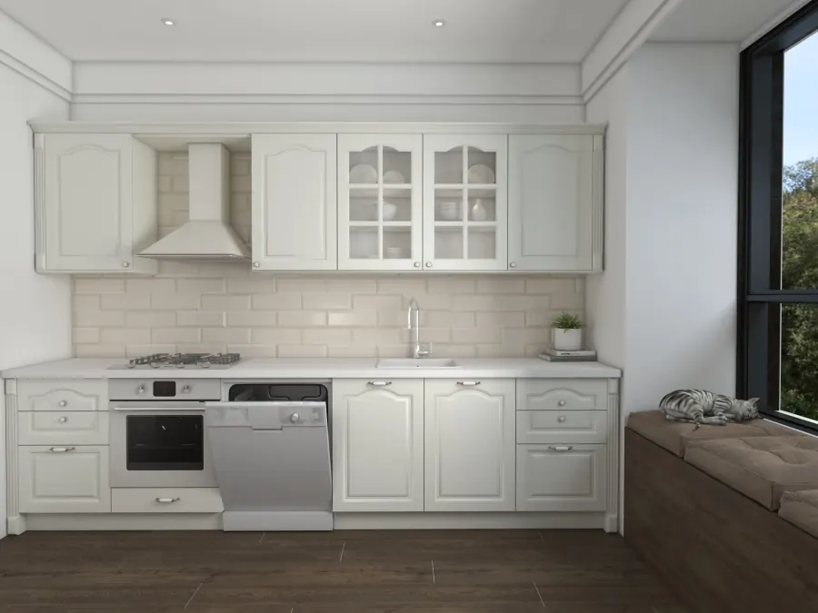
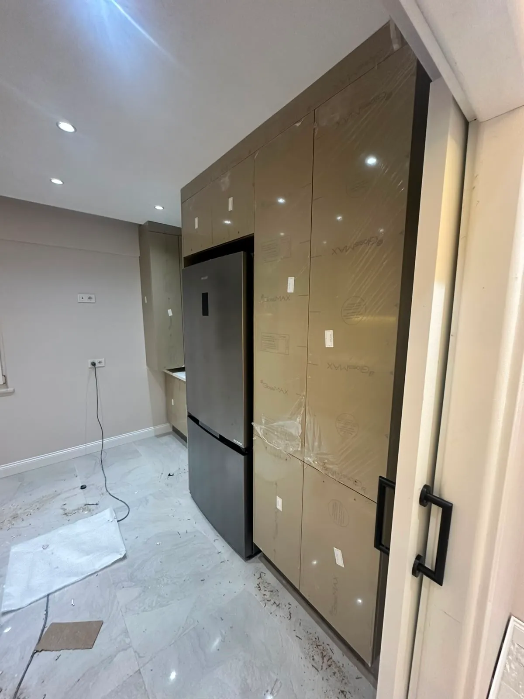

Ümraniye Membran Mutfak Dolabı İmalatı.
Country çıtalı, oymalı veya düz modern desenler. CNC tezgahlarımızda işlenmiş 18 mm MDF levhalar üzerine yüksek ısıyla yekpare vakum preslenen membran kapaklar; su buharına dirençli yapısı ve kolay silinebilirliğiyle mutfağınıza uzun yıllar zarafet katar.
%100
18mm MDF Gövde
Blum
Frenli Mekanizmalar
5 Yıl
Yazılı Garanti

Membran Kapak Mutfak Dolabı Nasıl Üretilir?
Atölye ortamında titizlikle uygulanan vakum presleme süreci ve teknik üstünlükler.
Neden Membran Mutfak Dolabı Tercih Edilmeli?
Membran kapaklar, 1. sınıf 18 mm ham MDF levhaların CNC tezgahlarda müşterimizin arzu ettiği özel desen, çıta veya oymalarla milimetrik işlenmesiyle başlar. Yüzey zımparalanıp tutkallandıktan sonra yüksek ısı ve vakum altında antibakteriyel PVC folyo ile yekpare kaplanır.
Kenar Bandsız Tasarım: Sıradan kapaklarda zamanla açılan kenar bantları membranda bulunmaz. Folyo kapağın 4 kenarını sararak tek parça döner; bu sayede lavabo yanı, bulaşık makinesi üstü gibi nemli bölgelerde mükemmel sızdırmazlık sağlar.
Teknik Standartlarımız:
- ✓ Gövde: 18 mm neme dayanıklı MDFlam (E1 normunda, kanserojen içermez)
- ✓ Kapak: 18 mm 1. Sınıf Çamsan / Kastamonu MDF üzeri PVC vakum folyo
- ✓ Mekanizma: Avusturya Blum veya Samet frenli sessiz menteşe ve tandem ray
- ✓ Model: Country çıtalı, rustik, cam kapaklı, minimalist düz profil

En Çok Tercih Edilen Membran Renkleri
Mutfak tezgahınız ve zemin seramiğinizle kusursuz uyum sağlayan mat ve ahşap tonlar.
Keşif randevumuz sırasında tüm fiziksel folyo numunelerini adresinize getiriyoruz.
Atölyemizde Membran Mutfak Dolabı İmalat Süreci
E1 sertifikalı suya dayanıklı MDF gövdeler ve vakum pres teknolojisiyle üretilen membran mutfak dolaplarımızın atölye üretim anları.

Diğer Mutfak Dolabı Kapak Modellerimiz
Bütçenize ve tarzınıza uygun diğer özel imalat kapak türlerini inceleyin.
Akrilik Kapak
Orijinal Senosan çizilmez ultra parlak kristal yüzey.
Akrilik İncele →Membran Mutfak Dolabı Modelleri, İmalat Detayları ve 2026 Metretül Fiyatları
Membran mutfak dolapları, 18 mm neme dayanıklı E1 sınıfı MDF levhalar üzerine yüksek ısı ve vakum basıncı altında PVC folyonun eksiz olarak preslenmesiyle üretilen, Türkiye'de ve dünyada en çok tercih edilen kapak teknolojisidir. Kenar bandı ek yeri bulunmadığı için su buharı ve neme karşı %100 sızdırmazlık sağlar; soyulma, kabarma veya kenarlardan kalkma riskini tamamen ortadan kaldırır. Mutfak Dolabınız olarak Yukarı Dudullu tesisimizde son teknoloji vakum pres makineleriyle ürettiğimiz membran mutfaklar, hem modern hem de rustik country tarzı mekanlara kusursuz uyum sağlar.
📊 2026 Membran Mutfak Dolabı Teknik & Fiyat Karşılaştırma Matrisi
| Teknik Parametre | Mutfak Dolabınız İmalat Standardı | Kullanıcı Avantajı & Garanti |
|---|---|---|
| Gövde Malzemesi | 18 mm E1 Neme Dayanıklı MDF-Lam (Kastamonu / Egger) | Kanserojen madde içermez, çökmelere karşı 15 yıl dirençli |
| Kapak Malzemesi | 18 mm CNC İşlemeli MDF + 0.40 mm Anti-Bakteriyel PVC Membran | Eksiz yekpare vakum pres, sıfır kenar bandı kabarma riski |
| Tutkal Standardı | Alman Henkel / Dural Poliüretan Çift Komponentli Tutkal | 140°C termal presleme, ocak buharında kesinlikle açılma yapmaz |
| Mekanizma & Ray | Avusturya Blum Frenli Menteşe / Samet Tandembox Ray | 100.000 açma-kapama döngü testli, ömür boyu sessiz kullanım |
| 2026 Metretül Fiyatı | ₺11.000 - ₺12.500 / Metretül (Üst-Alt Dolap Dahil) | Doğrudan Ümraniye fabrika satış fiyatı, aracı komisyonsuz |
| Teslimat & Montaj | 10-12 İş Günü Üretim · 1 Günde Temiz Montaj | İstanbul geneli ücretsiz lazerli keşif ve sözleşmeli 5 yıl garanti |
📐 CNC Frezeleme Teknolojisi ve Country/Modern Desen Çeşitliliği
Membran kapaklar, CNC tezgahlarında kapak yüzeyine sınırsız 3 boyutlu desen işleme kabiliyetiyle öne çıkar. Country çıtalı modeller, neoklasik oymalı taçlar, rustik çerçeveler veya sade minimalist çizgiler milimetrik hassasiyetle yüzeye işlenir. Alman Henkel poliüretan membran tutkalı ve 140°C termal vakum presleme ile PVC folyo tüm kanal ve köşeleri pürüzsüzce sarar. Bu sayede dolap kapakları hem estetik bir derinlik kazanır hem de kenarlarından su alma riski sıfıra indirilir.
🎨 2026 Renk Kartelası, Yüzey Dokuları ve Kolay Temizlik Avantajı
İpek mat beyaz, kaşmir bej, adaçayı yeşili, mat antrasit, taş grisi ve doğal budaklı meşe dokuları membran serisinin en çok aranan renkleridir. Gözeneksiz PVC yüzey yapısı yağ ve sos sıçramalarını emmez; nemli mikrofiber bezle saniyeler içinde temizlenir. Güneş ışığına karşı UV filtreli folyolar sayesinde yıllar geçse bile sararma veya renk solması yaşanmaz. Kimyasal temizleyicilere karşı dayanıklı yapısıyla aileler için son derece hijyenik ve zahmetsiz bir kullanım sunar.
🛡️ Gövde Standardı, Donanım Mekanizmaları ve Ergonomik Yerleşim
Mutfak Dolabınız olarak membran kapaklarımızın ardında kesinlikle sunta veya hafifletilmiş malzeme kullanmıyoruz; gövdeyi 18 mm çift taraflı melamin kaplı Kastamonu Entegre veya Egger E1 MDF-Lam ile üretiyoruz. Avusturya menşeili Blum veya yerli lider Samet frenli menteşeler ve 50 kg taşıma kapasiteli tandembox çekmece rayları ile mutfağınız onlarca yıl boyunca ilk günkü sessizliğinde çalışır. Tavana sıfır çift kat dolaplar ve le-mans kör köşe mekanizmaları ile her metrekareden maksimum verim elde edilir.
🏭 2026 Metretül Fiyatları ve Doğrudan Dudullu Fabrika İmalatı
Aracı mağaza, bayi veya komisyoncu masraflarını sıfırlayarak Ümraniye Yukarı Dudullu tesisimizden doğrudan tüketiciye ulaşıyoruz. İstanbul genelinde ücretsiz lazerli keşif ve 3D fotogerçekçi çizim sunuyor, onayınızın ardından 12 iş gününde imalatı tamamlayıp kendi uzman montaj kadromuzla 1 günde teslim ediyoruz. 5 yıl yazılı atölye garantisi ile membran mutfak dolabınızı güvenle yeniliyoruz.
Membran Mutfak Dolabı Sıkça Sorulan Sorular
Membran Mutfak Dolabı İçin Hemen Net Fiyat Alın
Mevcut mutfağınızın fotoğrafını veya kabataslak duvar ölçülerinizi WhatsApp hattımıza iletin; mimarımız metretül hesabını çıkarıp anında bütçenizi bildirsin.